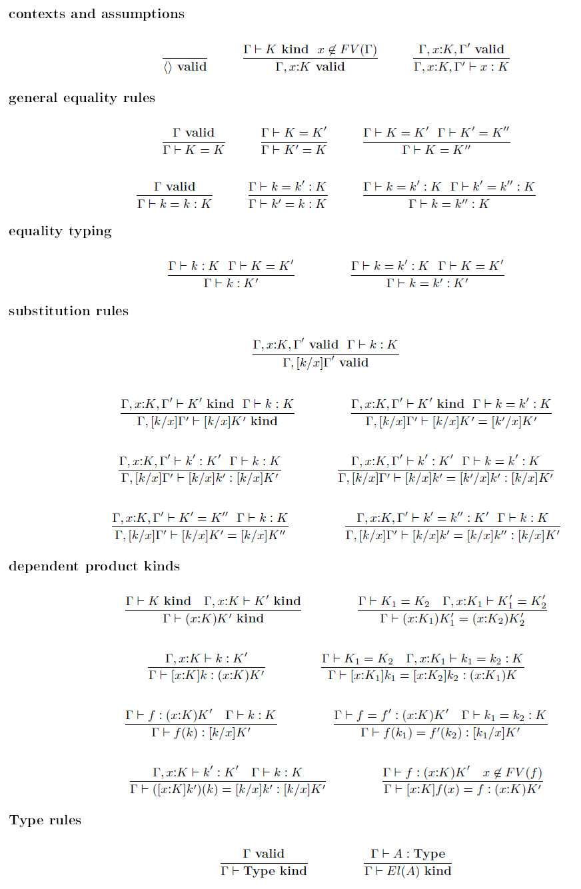

Posted in 2020
Biased stochastic approximation
- 01 December 2020
We explore the convergence of continuous-time ordinary differential equations and their discrete-time analogs, such as stochastic approximation and gradient descent, through the lens of Lyapunov theory [B+98] [LR15]. From this perspective, we will study biased stochastic approximation [KMMW19] where the expectation of the stochastic updates conditioned on the past (which we call the conditional expectation) is not the same as the expectation of the stochastic updates under the stationary distribution (which we call the total expectation).
This post is a continuation from our series on spiking networks, path integrals and motivic information.
Machine learning with relative information
- 23 October 2020
We will reframe some common machine learning paradigms, such as maximum likelihood, stochastic gradients, stochastic approximation and variational inference, in terms of relative information.
This post is a continuation from our series on spiking networks, path integrals and motivic information.
Path integrals and continuous-time Markov chains
- 14 October 2020
We give an introduction to continuous-time Markov chains, and define path measures for these objects.
This post is a continuation from our series on spiking networks, path integrals and motivic information.
Motivic relative information
- 07 October 2020
So far, our definition of relative information studies the divergence between real-valued measures. In this post, we will explore motivic measures which take values more generally in some ring \(R\), and have some fun applying motivic relative information to zeta functions.
This post is a continuation from our series on spiking networks, path integrals and motivic information.
Zeta functions, Mellin transforms and the Gelfand-Leray form
- 05 October 2020
We outline the similarities between zeta functions appearing in number theory and in statistical learning.
This post is a continuation from our series on spiking networks, path integrals and motivic information.
Conditional relative information and its axiomatizations
- 18 September 2020
In this post, we will study the conditional form of relative information. We will also look at how conditional relative information can be axiomatized and extended to non-real-valued measures.
This post is a continuation from our series on spiking networks, path integrals and motivic information.
Building foundations of information theory on relative information
- 08 September 2020
The relative information [BF14] (also known as relative entropy or Kullback-Leibler divergence) is an important object in information theory for measuring how far a probability measure \(Q\) is from another probability measure \(P.\) Here, \(Q\) is usually the true distribution of some real phenomenon, and \(P\) is some model distribution.
In this post, we emphasize that the relative information is fundamental in the sense that all other interesting information-theoretic objects may be derived from it. We also outline how relative information can be defined without probability mass functions or probability density functions, or even in the absence of absolute continuity.
Motivic information, path integrals and spiking networks
- 28 August 2020
I’m writing a series of posts that will explore the connections between these topics. Here is a rough outline of the series, which I will fill in slowly over time.
Building foundations of information theory on relative information
Processes and variety maximization
- 07 August 2020
“It’s a theory about processes, about the sequences and causal relations among things that happen, not the inherent properties of things that are. The fundamental ingredient is what we call an “event.” Events are things that happen at a single place and time; at each event there’s some momentum, energy, charge or other various physical quantity that’s measurable. The event has relations with the rest of the universe, and that set of relations constitutes its “view” of the universe. Rather than describing an isolated system in terms of things that are measured from the outside, we’re taking the universe as constituted of relations among events. The idea is to try to reformulate physics in terms of these views from the inside, what it looks like from inside the universe.”
“There are many views, and each one has only partial information about the rest of the universe. We propose as a principle of dynamics that each view should be unique. That idea comes from Leibniz’s principle of the identity of indiscernibles. Two events whose views are exactly mappable onto each other are the same event, by definition. So each view is unique, and you can measure how distinct one is from another by defining a quantity called the “variety.” If you think of a node on a graph, you can go one step out, two steps out, three steps out. Each step gives you a neighborhood — the one-step neighborhood, the two-step neighborhood, the three-step neighborhood. So for any two events you can ask: How many steps do you have to go out until their views diverge? In what neighborhood are they different? The fewer steps you have to go, the more distinguishable the views are from one another. The idea in this theory is that the laws of physics — the dynamics of the system — work to maximize variety. That principle — that nature wants to maximize variety — actually leads, within the framework I’ve been describing, to the Schrödinger equation, and hence to a recovery, in an appropriate limit, of quantum mechanics.” - Les Smolin
Adjunctions
- 23 July 2020
Read about the Curry-Howard-Lambek correspondence. Some call it the holy trinity of Logic, Computation and Categories. Lambek adds the “objects as propositions” and “arrows as proofs” part to the mix. You may need to learn some basic category theory.
http://arca.di.uminho.pt/quantum-logic-1920/CategoriesAndLogic.pdf
Directed spaces and types
- 26 May 2020
Joint work with Jin Xing Lim, Liang Ze Wong, Georgios Piliouras.
There is a concept of Directed Spaces. Since Types can be thought of as Spaces, the question is what kind of additional information we would need to construct such a Type (e.g. for undirected types, we can construct these types using identity types as additional information).
Logical frameworks
- 21 May 2020
Logical frameworks are formal meta-languages for specifying different kinds of object theories (e.g. logical theories and type theories).
LF is a logical framework [HHP93] that formalizes Martin-Lof’s logical framework and is itself based on type theory. It was designed to unify similarities between two forms of judgments.
